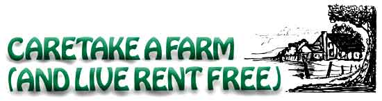

Are you ready to head for the country, but lack the $$ to buy or rent land? That was Dale and Sandy Deraps' situation exactly . . . until a friend suggested that theycaretake a farm.
You've probably heard of house-sitting, or living in-and looking after-a residence while its owner is on vacation (see. "Getting Paid for Living Good" in MOTHER NO. 15, "House-sitting as a Way of Life" in MOTHER NO. 37, "We Caretake 70 Wilderness Acres" in LIFESTYLE! NO. 5, and "Free Rent" in LIFESTYLE! NO. 7).
Well, farm caretaking is somewhat similar . . . except that, in the kind of cases I'm talking about, the owner is always away, so you don't have to worry about moving out in a couple of weeks or months. Plus, you get to see what farm life is all about-firsthand and close up-without having to invest thousands of dollars in your own "spread".
Sound like a good deal? We thought so, after a friend of ours explained the idea to us. At the time we had just spent weeks gumshoeing around the backwoods in search of low-rent rural housing (to no avail), we were ready to try anything . . . and caretaking sounded like just the answer.
So, at a cost of around $100, we placed the following ad in various newspapers and county journals over a two-month period:
We will protect and maintain your farm property for the privilege of living there. Caretaking includes safeguarding
adjacent outbuildings, livestock, equipment, crops, woods, roads, fields, and water systems. No utilities needed except on-site water and stovewood privileges. Must be no more than two hours' driving time from St. Louis. Reply to Box__or call collect (314) 000-0000.
We paid $10 a shot to run this classified listing in both of the two big St. Louis papers, and we also placed the notice in seven county journals that were published in the areas where we wanted to live.
The widely read St. Louis newspapers pulled the biggest response, from landowners, who lived right in town and from folks as much as 200 miles distant. (The papers' Sunday editions seem to reach small towns within a radius of at least 150 miles.) All told, we received about 60 replies to our little advertisement.
The propositions sent to us were amazingly varied. Landowners with IS to 1,500 acres wrote, asking if we'd like to: perform full-time farming . . . stay just for the winter (or summer) months . . . look after livestock . . . restore, inhabit, and maintain an existing dwelling . . . live in a house trader, or-in one case-a converted city bus . . . bring a trailer and live on the land . . . swap labor for our stay . . . pay token rent and do no labor . . . etc.
After looking into several attractive offers, we moved to a 200-acre farm (with fine old house, barn, and well-preserved sheds) 80 miles west of St. Louis. The nice thing about this "find" is that we didn't have to supply any household items: We simply walked in the door and began living. Not only was the house itself completely furnished down to blankets, pots, and pans . . . but the sheds were jampacked with tools of all sorts, and the barn contained-among other things-a spankin'-new Ford tractor and implements.
We figure that our method of farm hunting should work for anyone, just about anywhere in the country. Remember, though, that situations are always changing . . . and that your ad-if printed in June or July-may not draw quite the response that ours did back in November and December.
Here-based on what we've learned-are some down-to-earth suggestions which we hope will help you to find that perfect owner/caretaker setup:
[1] Steer clear of property which is either already up for sale, or likely to be so offered while you're residing on the place. Ask the landlord about this little detail before you seal any agreement.
[2] Be honest when you explain your situation and your desires to an owner. This could prevent hard feelings later.
[3] When in doubt, get it in writing. Put your duties, privileges, conditions of stay, etc., down on paper and have both parties sign and keep copies of the understanding.
[4] If your farm's owner expects you to work as part of the deal-rather than simply watch over things-come to some sort of mutual agreement as to what a year's rent is worth . . . and then offer to make good this amount in cash and/or labor. Remember, your very presence is a service and thus has a dollar value. On top of that, any work you do should be worth at least $2.50 an hour (or whatever the going rate might be in your area), Set the exchange up on a yearly basis if you can, since you'll be busier some seasons than others.
[5] Regardless of who you are, country people are likely to accept you as long as they can see you're genuine and hardworking. So try to look-and be-genuine and hardworking! (Note: While making our deal I cut my hair for the first time in three years and found that, as a result, I was much more quickly accepted . . . even with my beard still intact.-DD.)
[6] Communicate. Make it a point to talk things over with your farm's owner from time to time. It'll keep hidden misunderstandings from building up.
[7] Finally, know thyself. Farm life, in case you haven't heard, can be pretty demanding. You've got to accept that fact, and come to grips with your own inadequacies . . . or be doomed. We worked three years to get ourselves "together" mentally, physically, and spiritually for the Big Move. Yet even so, as caretakers-not farmers-we've more than once run up against the brick wall Of OUT limitations. Our advice-if you have any doubts about whether or not you're ready to go "back to the land"-is don't go.
We feel we've been fortunate in finding our present setup. The owner of "our" farm plans to reside here one day himself but is currently tied to a job in the city. In the meantime we live on his property, chop our own wood, gather wild foods, keep a garden, and rejuvenate old fruit trees . . . among other things. (This summer, we'll paint the house and the roof on the barn, plant walnut trees, and mow pastures.)
Take it from us: You don't have to have money in order to move to the country. All you need is a willingness to work, a desire to leave the city . . . and a landowner who'll let you live rent free in exchange for caretaking his farm!
|
 |
|
|